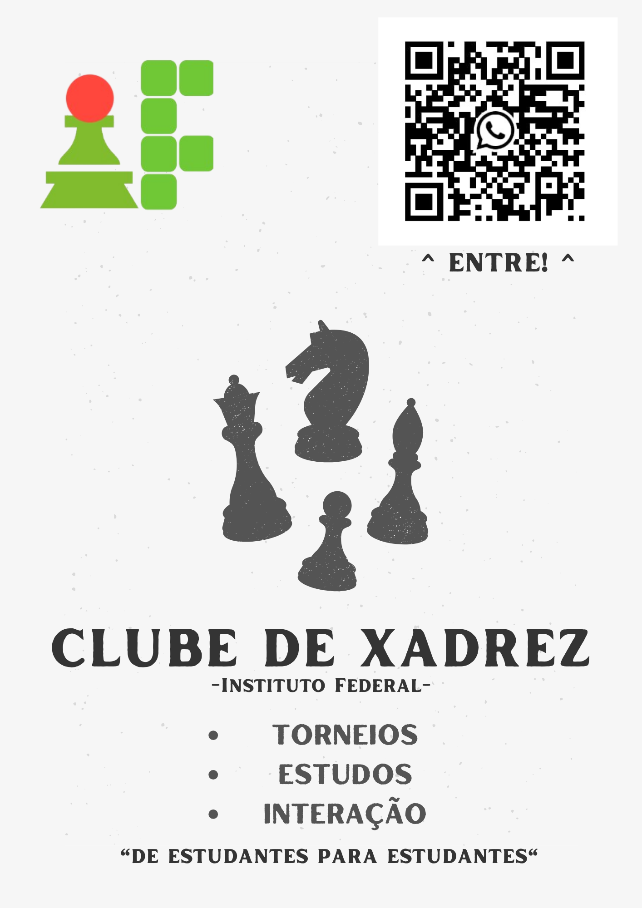
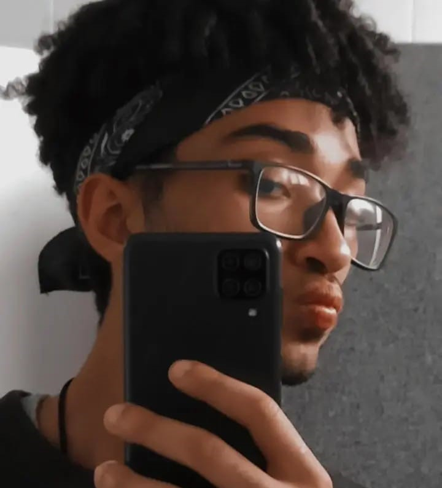

IF CHESS CLUB
O IF Chess Club (IFCC) é um clube de xadrez aberto a todos os membros do Instituto Federal de São Paulo que compartilham algum interesse no jogo. Nossa proposta é criar um ambiente acolhedor e inclusivo para os amantes do xadrez, provendo um espaço dedicado para compartilhar anúncios, promover diálogos, disponibilizar materiais de estudo e organizar eventos no contexto do grupo e de forma integrada ao âmbito educacional do instituto.
ORGANIZADOR
Fernando Barreto da Silva é um estudante do Instituto Federal de São Paulo, no curso de Análise e Desenvolvimento de Sistemas. Como enxadrista, decidiu promover seu interesse para os demais estudantes e unir aos que compartilhavam o mesmo pensamento em um único lugar. Para isso, criou o IFCC, que iniciou como um grupo no whatsapp, que passou para um clube nas plataformas de xadrez online e, agora, em processo de avaliação para se tornar um clube oficial da atlética do campus.
- (11) 95307-6766
- fernando.barreto@aluno.ifsp.edu.br